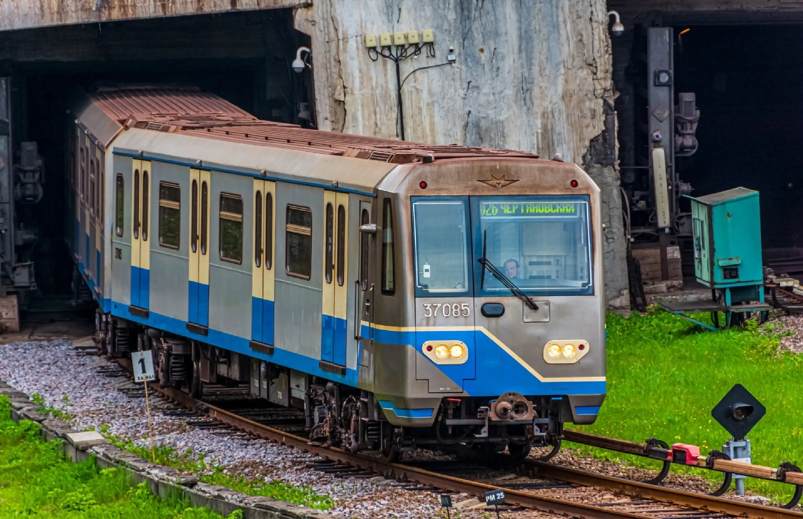
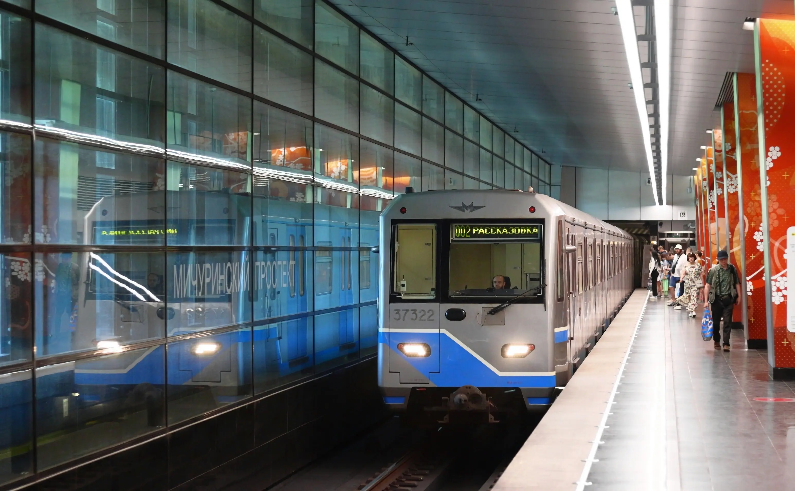
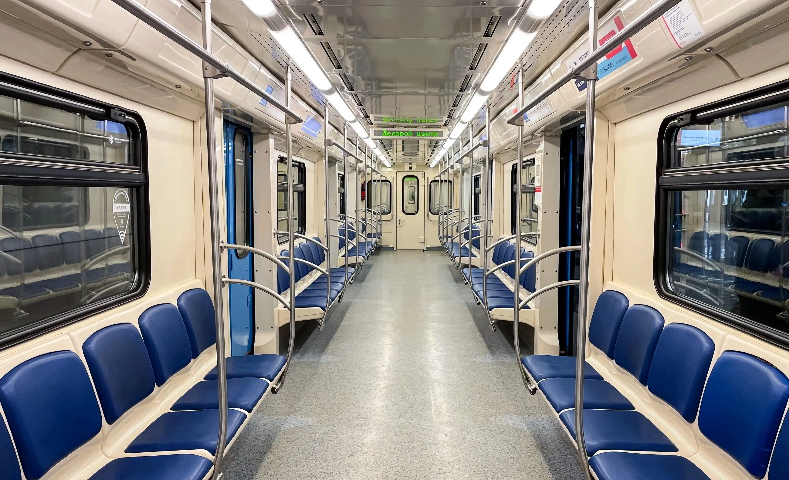
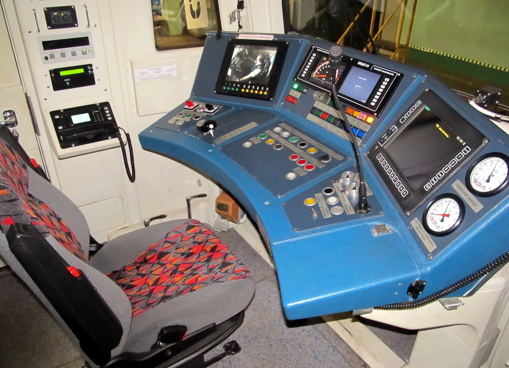

Характеристики «Оки» одинаковы, но различны в мелких деталях
Метропоезд 81-760 «Ока»
81-760 / 761 / 763 — 81-76 - серия, 0 - моторный головной, 1 - моторный промежуточный, 3 - прицепной промежуточный. Выпускался с 2010 по 2016 год на Метровагонмаш, Тверском вагоностроительном заводе. Построено 168 состав.
Серийный метропоезд для Москвы. Разработка велась с 2005 года с целью заменить поезд 81-717 «Номерной». Предполагалась унификация с предшественником с изменениями: новые тележки и тяговый привод, увеличенная кабина с аварийных выходом по ходу движения и новый салон.
В итоге был создан новый тип вагонов, который унаследовал от вагонов 81-717.6 близкие размеры кузова, схожую по конструкции лобовую маску с аварийной дверью, расположение боковых дверей и планировку салонов. А от вагонов 81-740 «Русич» — гладкие вертикальные боковые стенки кузова с прислонно-сдвижными дверями, наклонный профиль лобовой части, конструкцию потолочной вентиляции, световые линии, наддверные маршрутные табло в салоне, асинхронный тяговый привод и микропроцессорную систему управления. При этом многие конструктивные элементы претерпели значительные изменения по сравнению с предшественниками.
Опытный поезд был построен в 2010 году и продемонстрирован на станции Марьина Роща (Люблинская линия) к 75-летию Московского метрополитена. К серийному производству заводы приступили в конце 2011 года. Кузова промежуточных вагонов выпускались на Тверском вагоностроительном заводе, а остальные работы велись на Метровагонмаш.
В 2014 году метрополитен Баку (Азербайджан) заказал партию из трёх составов со сквозным проходом между вагонами. От поездов отказались изменив технические требования с установкой новой маски кабины. В 2015 году с учтёнными требованиями 3 состава из 5-ти вагонов отправлены заказчику.
Технические Характеристики:
Г-головной, П-промежуточный
- Вместимость — 2×306 чел. (Г) и N×330 чел. (П)
- Сидячие — 2×40 мест (Г) и N×44 места (П)
- Высота — 3680 мм
- Длина — 2 × 20 120 мм (Г) и N × 19 140 мм (П)
- Ширина — 2686 мм
- Колея — 1520 мм
- Конструкционная скорость — 90 км/ч
- Минимальный радиус прохождения кривых — 60 м
- Мощность ТЭД — N × 4×170 кВт (N×680 кВт)
- Тип ТЭД — асинхронные, ТАДВ-280-4 У2, ДТА-170 или ДАТМ-2 У2
- Род тока — постоянный (750 В)
- Служебная масса — 2×38 т (Г) и N×36 т (П)
- Составность — 2-8 вагонов
Последователи:
- Заменяется метропоездом серии 81-765 «Москва»
- Тележки и комплектующие используются в 81-722 «Юбилейный»
- Конструкционно был создан опытные метропоезд 81-780 «Ладога»
Эксплуатация
- Азербайджан: Баку
- Россия: Москва
  
сделали Лядов Тимофей и Никитин Станислав